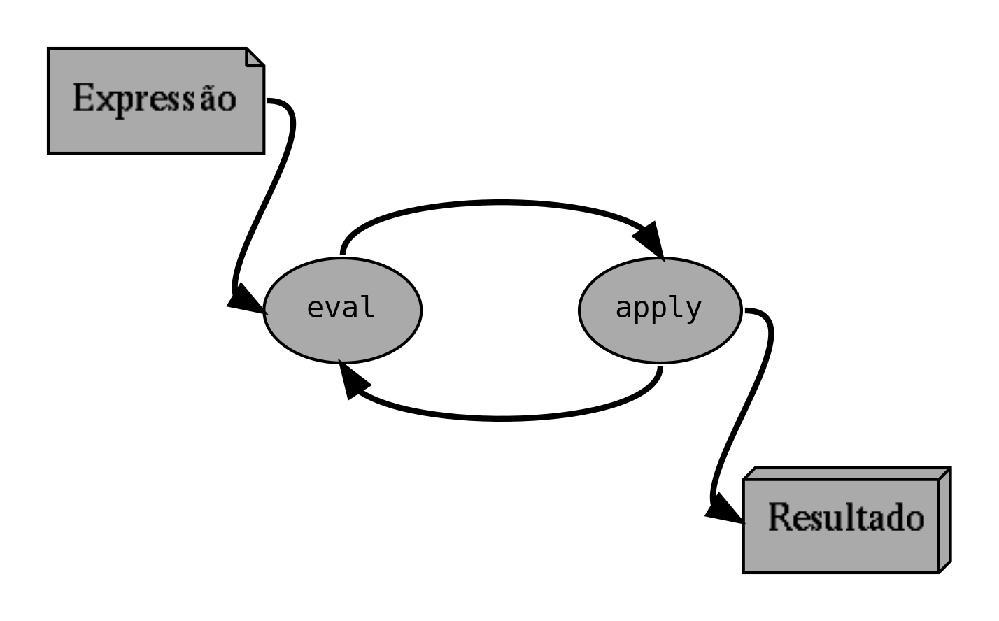
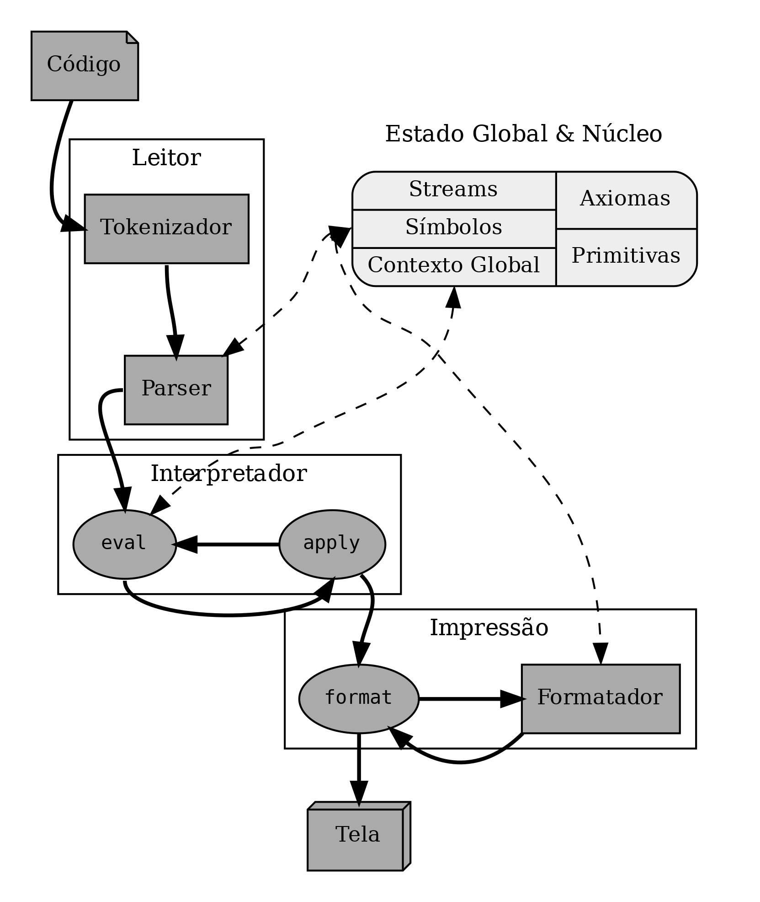

Majestic Lisp
Majestic Lisp é o dialeto de Lisp implementado nesse livro. A implementação dele é baseada em cinco pontos principais, que definem as decisões de design da linguagem e da implementação:
- Performance não é um objetivo central, ainda que seja bem-vinda. Certamente é conveniente que o interpretador de Majestic Lisp tenha certas otimizações mas, dado que essa obra seja direcionada também para iniciantes em programação, não é necessário que o interpretador tenha uma performance a nível de uma linguagem usada para trabalhos profissionais;
- A implementação busca ser didática ao máximo, e por isso foi feita utilizando literate programming (KNUTH, 1984) que aqui é traduzido livremente como programação instruída. Esse paradigma é discutido mais adiante;
- A linguagem em si deve ser algo simples, em especial para aqueles que já tenham algum costume com outros dialetos de Lisp (como Scheme, Clojure e Common Lisp) – onde houver mudanças, elas deverão ser inteligíveis ao máximo;
- A obra em si deve mostrar ao leitor que a criação de uma linguagem de programação e de seu interpretador, ainda que não seja uma atividade trivial, está longe de ser uma atividade intangível;
- A linguagem em si foi pensada tanto para uso em computador quanto para uso algébrico, isto é, como uma notação que pode ser escrita à mão, sendo então uma ferramenta para explicar alguns conceitos de computação, quando pertinente.
O primeiro ponto é evidente quando partimos do pressuposto de que o ideal para um programa é não realizar otimização prematura, o que não significa que não possamos usar boas ideias logo no início de um projeto. O software descrito nesse livro é algo acessível, do ponto de vista de um iniciante curioso em programação que já tenha uma certa prática.
A didática é essencial, e também é a causa determinante do segundo e terceiro pontos, também por razões de acessibilidade anteriormente descritas. Isso acaba por culminar na justificativa para o quarto ponto: um programador iniciante pode ficar facilmente intimidado pela ideia da construção da própria linguagem de programação. Todavia, um interpretador de uma linguagem é um programa como qualquer outro.
O quinto ponto vem inspirado diretamente em Iverson (1980), que ressalta o uso da notação – nesse caso, a linguagem de programação em si – como uma ferramenta usada para raciocinar. Um Lisp simples, com regras facilmente compreensíveis, pode ser uma excelente ferramenta para explicar conceitos matemáticos envolvendo Lambda Calculus (CHURCH, 1936) ou os famosos numerais de Church, por exemplo.
Majestic Lisp possui uma sintaxe não muito diferente do que se encontra nos demais Lisps, no sentido de que também é baseada em s-expressions. Mas ela também possui suas próprias idiossincrasias que a difere dos demais dialetos. Posteriormente, observaremos adequadamente esses detalhes.
1. Design do Interpretador
O interpretador de Majestic Lisp segue vagamente os moldes determinados por Abelson, Sussman e Sussman (1996), que definem o chamado interpretador metacircular.
Definimos este tipo de interpretador para uma linguagem de programação
como sendo circular, por apresentar uma recursão mútua entre dois
procedimentos principais: eval e apply. O uso do sufixo meta na
denominação diz respeito à natureza metalinguística do mesmo:
definimos o interpretador da linguagem em questão, usando a própria
linguagem que se quer interpretar. Em Abelson, Sussman e Sussman (1996), define-se o
interpretador de Scheme – um dialeto de Lisp – usando a própria
linguagem Scheme.

Figure 1: Recursão mútua em um interpretador metacircular.
Esse tipo de abstração é extremamente poderosa, porque nos permite observar apenas o cerne do interpretador de uma linguagem de programação, sem demais considerações. Por exemplo, aqui assumimos que a expressão a ser interpretada já esteja em um formato que possa ser consumido pelo interpretador. Um programa de computador, normalmente, precisa ser digitado em um arquivo-texto, e esse arquivo então deverá ser processado para ser consumido pelo cerne do interpretador.
Para um interpretador metacircular de um dialeto de Lisp, esse
processo é ignorável: pode-se tirar vantagem da própria estrutura da
linguagem, que já realiza essa transformação. Assim, o programador só
precisa preocupar-se com as implementações dos procedimentos eval e
apply, as funções principais na descrição de um interpretador nesse
modelo.
O interpretador de Majestic Lisp aqui descrito foi construido usando a
linguagem de programação Rust. Sua descrição, portanto, não possui a
característica de ser metalinguística, mas isso não significa
que abandonaremos o modelo da circularidade mútua entre eval e
apply. Ao invés disso, lidaremos com mais alguns passos extras, como a
transormação de um arquivo-texto em uma estrutura que possa ser
interpretada.

Figure 2: Esquema ilustrativo do interpretador de Majestic Lisp.
A Figura 2 descreve um esquema geral da arquitetura do interpretador de Majestic Lisp. Esse interpretador consiste de três módulos principais, além de um componente global trabalhando para a execução do interpretador.
O componente global de Majestic Lisp constitui-se, grosso modo, de duas partes importantes: o núcleo e o estado global.
O núcleo estipula certos axiomas e funções primitivas da linguagem, de forma que esses elementos e valores estejam disponíveis ao ambiente assim que o mesmo se inicia – o código em si poderá ser executado de forma subsequente.
O estado global encerra certas coleções vitais para a execução de um programa, podendo inclusive serem mutáveis. Essas coleções são:
- Tabela de Símbolos: Um programa Lisp é composto principalmente por listas de símbolos, uma vez que Lisps são linguagens para computação simbólica. A tabela de símbolos é responsável por manter referências de símbolos, permitindo que sejam reutilizados ao longo do programa.
- Contexto Global: Em Majestic Lisp, trata-se de uma tabela que associa certos símbolos a valores específicos. Esse contexto é visível em todas as partes do programa, sendo esta a sua principal diferença com relação a um contexto léxico, que será melhor explorado em outro local.
- Tabela de Streams: Categoriza e gerencia streams abertos, que são estruturas muito similares a descritores de arquivo (SILBERSCHATZ, GALVIN e GAGNE, 2015, p. 445). Em Majestic Lisp, os streams são responsáveis por toda a comunicação de entrada (por exemplo, fornecer o código ao Leitor) e saída (redirecionar o que será escrito na Tela ou em um arquivo). Streams são estruturas opacas que dependem de detalhes do sistema em que o programa do interpretador é executado.
Resta agora enumerar os módulos principais do sistema. Eles são:
- Impressão: Módulo responsável por formatar expressões em texto nativo, de forma que possam ser mostradas em formato humanamente legível. Como a impressão envolve percorrer e verificar símbolos, precisa ter acesso à tabela de símbolos do estado global;
- Leitor: Módulo responsável por tomar uma certa entrada em formato de texto nativo e transformá-lo em uma estrutura que possa ser processada pelo interpretador, normalmente conhecida como árvore sintática abstrata (AST). Como a leitura é um processo de transformação de símbolos em texto nativo para símbolos no ambiente Lisp, precisa ler e modificar a tabela de símbolos do estado global;
- Interpretador: O módulo mais importante do programa, sendo responsável pelo processo de interpretação de uma expressão em formato de AST
Em um Lisp como Majestic Lisp, as árvores sintáticas abstratas são representadas usando listas simplesmente ligadas. Segundo Cormen et al (2012), uma lista ligada é aquela cujos objetos estejam organizados linearmente, sendo esta ordem determinada por ponteiros, que aqui podemos compreender como referências ao ``próximo elemento''.
Isso introduz dois pontos de relevância: primeiramente, como Lisps são linguagens feitas para a manipulação de listas simplesmente ligadas, podemos representar internamente nossos programas usando o próprio framework da linguagem1. Isso significa que não será preciso implementar uma estrutura que sirva apenas para representar uma AST.
Segundo, como a AST pode ser representada diretamente em uma lista, isso significa que nossos programas poderiam ser manipulados através da própria linguagem. Esse é um conceito crucial de uma linguagem como Lisp, ainda que não seja exclusivo aos Lisps; a ele, damos o nome de homoiconicidade.
Podemos tirar muito proveito desse conceito; o leitor atento já terá percebido que podemos criar listas, durante a execução de um programa, que constituam também outros programas Lisp válidos.
Bibliografia
Abraham Silberschatz and Peter Baer Galvin and Greg Gagne (2015). Fundamentos de Sistemas Operacionais, LTC.
Alonzo Church (1936). An Unsolvable Problem of Elementary Number Theory, {American Journal of Mathematics}.
Donald E. Knuth (1984). Literate Programming, The Computer Journal.
Harold Abelson and Gerald Jay Sussman and Julie Sussman (1996). Structure and Interpretation of Computer Programs, MIT Press.
Kenneth Eugene Iverson (1980). Notation as a Tool of Thought, {Communications of the ACM}.
Thomas H. Cormen and Charles E. Leiserson and Ronald R. Rivest and Clifford Stein (2012). Algoritmos, Elsevier.
Footnotes:
A melhor forma para compreendermos essa ideia é lembrando-nos de que, em algum ponto, precisamos de algo como uma ``matéria-prima'' para representarmos as listas em Majestic Lisp. Se tivermos uma forma simples de representação de listas simplesmente ligadas, então basta que, durante o processo de conversão do programa, criemos listas cujos elementos sejam símbolos ou outras sub-listas. Esse processo será melhor discutido mais tarde.